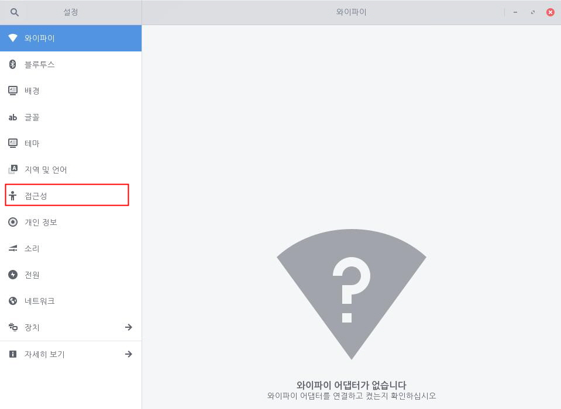
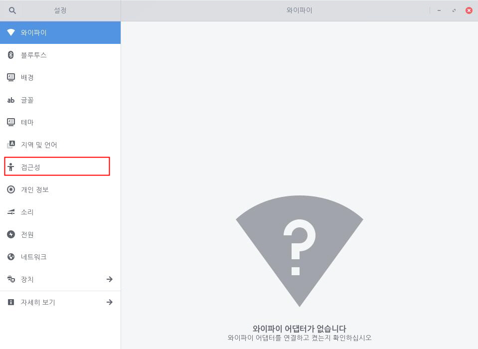
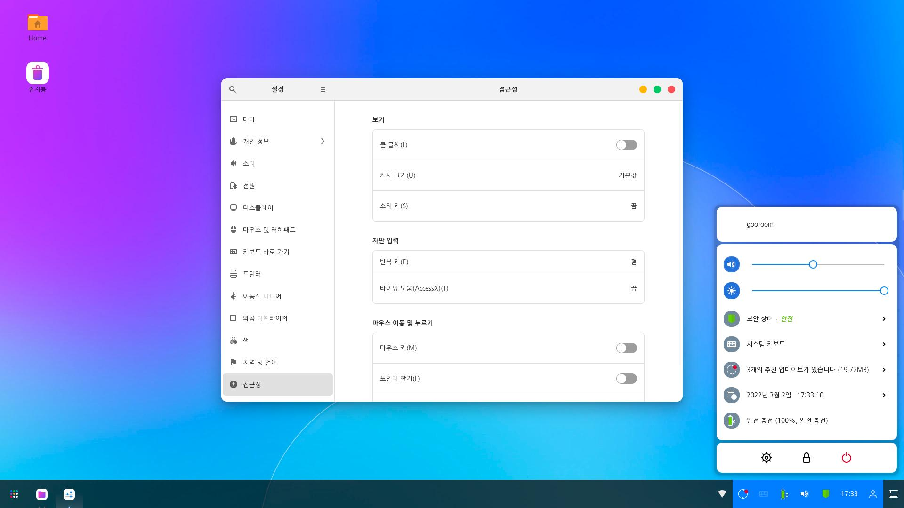
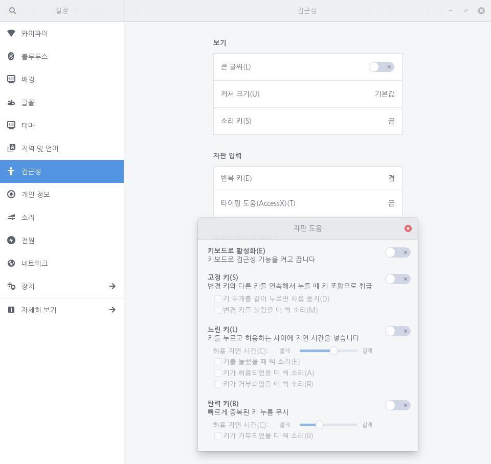

키를 입력한 다음 화면에 글자가 입력되는 시간을 일부 지연시킴으로써 사용자가 특정 키를 누르면 일정 시간 이후에 화면에 해당 글자가 입력됩니다. 따라서 글자를 입력하려면 해당 키를 일정 시간 동안 누르고 있어야 합니다. 키보드를 사용할 때 실수로 여러 개의 키를 누르거나 특정 키를 누르는 데 어려움이 있는 경우 유용하게 사용할 수 있습니다. 다음 단계를 수행하여 느린 키를 설정할 수 있습니다.1. 좌측 하단의 [시작]아이콘을 클릭하고 검색 창에 "설정"을 입력한 후 [설정] 애플리케이션을 실행합니다.
 2. [설정] 애플리케이션 사이드 바에서 [접근성]을 클릭합니다.
2. [설정] 애플리케이션 사이드 바에서 [접근성]을 클릭합니다.
3. [자판 입력] 아래에서 [타이핑 도움]을 클릭합니다. [자판 도움] 창에서 [느린 키] 설정 단추를 오른쪽으로 밀어 켭니다. [자판 도움]에서 [키보드로 활성화]가 설정된 경우 Shift 키를 8초 동안 눌러 느린 키를 켜거나 끌 수 있습니다. [허용 지연 시간] 슬라이드를 사용하여 키를 얼마나 오랫동안 눌러야 할지 설정할 수 있습니다. 또한 [키를 눌렀을 때 삑 소리], [키가 허용되었을 때 삑 소리] 또는 [키가 거부되었을 때 삑 소리] 옵션을 선택하여 원하는 상황에서 알림음을 재생할 수 있습니다.